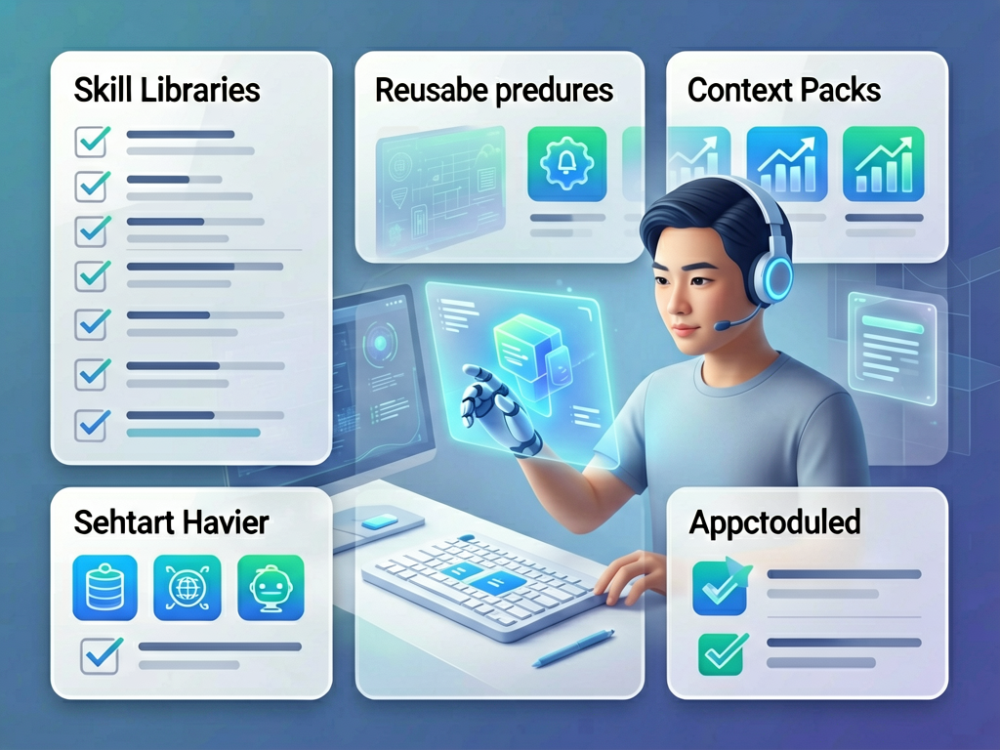
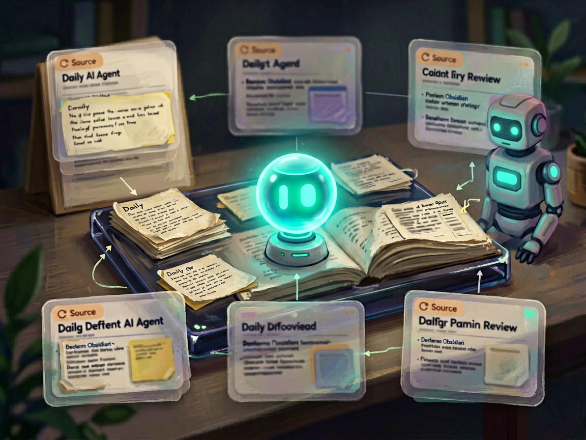
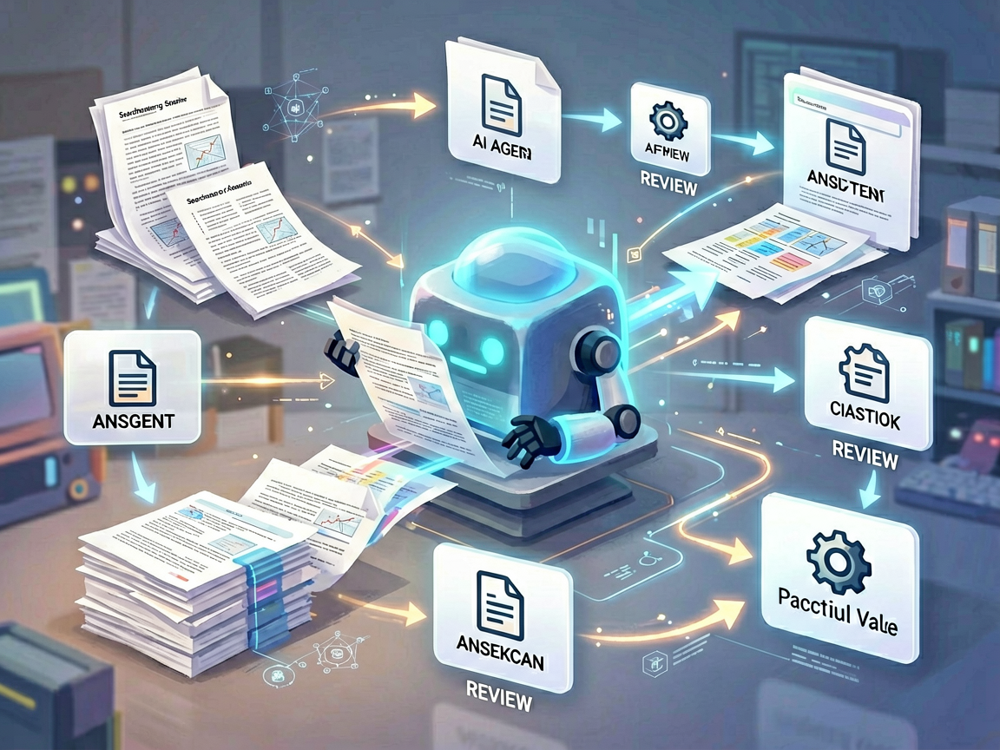
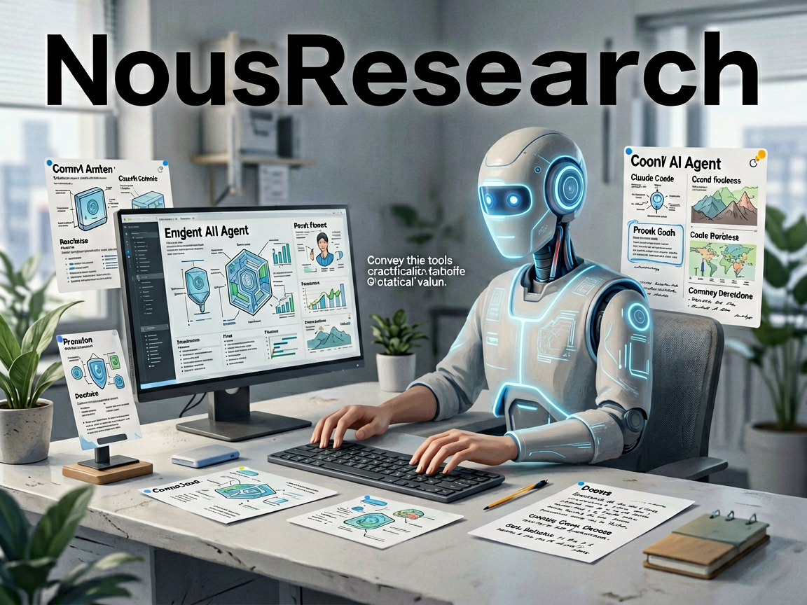

把 AI 聊天助手变成能执行任务的工作台
zhayujie/CowAgent
CowAgent 的核心价值不是再做一个聊天窗口，而是让 AI 助手可以规划任务、调用工具、接入外部能力。你可以把它理解成一个“会动手的 AI 助理底座”：它不只回答你，还试图把一个复杂需求拆成步骤去完成。
公开信息依据
原项目怎么说：Open-source super AI assistant & Agent Harness. Plans tasks, runs tools and skills, self-evolves with memory and knowledge. Multi-model, multi-channel. Lightweight, extensible, one-line install. (formerly chatgpt-on-wechat)
主题线索：GitHub topics: ai, ai-agent, ai-agents, chatgpt-on-wechat, claude, claude-code, codex, cowagent
它适合什么场景
如果你经常让 AI 帮你写代码、查资料、整理内容，却还要自己来回复制结果、切工具、补上下文，这类 Agent Harness 就有意义。它适合放在“让 AI 参与一整段工作流程”的场景里，而不是只拿来问答。
值得关注的地方
优点是方向很清楚：任务规划、工具调用、记忆和多模型协作都围绕“让 AI 真正干活”展开。它也有较高关注度，说明这条路线正在被大量开发者验证。
先别忽略的问题
问题也明显：这类工具通常配置链路较长，真正落地时会遇到模型、工具权限、上下文和稳定性问题。普通用户不一定适合马上上手，开发者和自动化玩家更适合先试。
我的判断：这是今天最值得深挖的项目之一，但它更像“高级玩家工具箱”，不是开箱即用的效率神器。
查看 GitHub 来源loushang
zhnt/loushang
zhnt/loushang 更像一包现成技能，把别人整理好的流程和方法直接装给 AI 助手用。
公开信息依据
原项目怎么说：AI-native agent harness for coding workflows by python: multi-model LLM orchestration, stateful sessions, tool governance, traceable delivery, and provider routing for GPT, Claude, DeepSeek, Qwen, Kimi, GLM, and MiniMax.
主题线索：GitHub topics: agent, agent-harness, agentic, ai, chatgpt, claude, claude-code, codex
它适合什么场景
需要构建、评估或编排 AI Agent 工作流时使用。
值得关注的地方
离 Skill 化很近，里面的方法、模板或流程通常可以直接拆出来复用。
先别忽略的问题
现成 Skill 包不一定适合你的工作流，需要筛掉口号多、步骤虚的内容。
我的判断：可以先收藏观察，再用一个小任务验证它是否真的适合自己的工作。
查看 GitHub 来源
把你的资料变成可以对话的私人知识库
khoj-ai/khoj
Khoj 更接近大众能理解的 AI 工具：把笔记、文档、网页资料接进 AI，让你可以像问人一样询问自己的资料。它面向的不是单次聊天，而是长期积累的信息。
公开信息依据
原项目怎么说：Your AI second brain. Self-hostable. Get answers from the web or your docs. Build custom agents, schedule automations, do deep research. Turn any online or local LLM into your personal, autonomous AI (gpt, claude, gemini, llama, qwen, mistral). Get started - free.
主题线索：GitHub topics: agent, ai, assistant, chat, chatgpt, emacs, image-generation, llama3
它适合什么场景
如果你有大量 Obsidian 笔记、研究资料、项目文档或网页收藏，最大痛点往往不是没保存，而是事后找不到、串不起来。Khoj 这类工具的目标就是帮你把资料重新变成可检索、可追问、可复用的知识。
值得关注的地方
优点是使用场景很清晰，和个人知识管理、研究写作、项目复盘都能直接连接。相比纯 Agent 工具，它更容易让普通用户理解“我为什么需要它”。
先别忽略的问题
难点在于知识库工具很吃个人资料结构。如果你的笔记本身混乱、来源不清、命名随意，AI 也很难给出可靠答案。它不是魔法整理器，前期仍需要资料质量。
我的判断：这是最适合普通读者关注的项目。它不一定最炫，但最容易转化成真实生产力。
查看 GitHub 来源
把常见自动化流程做成可直接参考的模板库
enescingoz/awesome-n8n-templates
这个项目收集了大量 n8n 自动化模板，覆盖邮件、聊天工具、网盘、Notion、OpenAI、文档处理和社交媒体等场景。它的价值不在“发明新技术”，而在把别人已经跑通的流程摆在你面前。
公开信息依据
原项目怎么说：280+ free n8n automation templates — ready-to-use workflows for Gmail, Telegram, Slack, Discord, WhatsApp, Google Drive, Notion, OpenAI, and more. AI agents, RAG chatbots, email automation, social media, DevOps, and document processing. The largest open-source n8n template collection.
主题线索：GitHub topics: ai-agents, ai-automation, automation, automation-templates, awesome, awesome-list, integration, low-code
它适合什么场景
当你想做一个自动化流程，比如收到邮件后让 AI 总结、把文件同步到资料库、定时生成内容草稿，最难的往往不是写代码，而是不知道流程该怎么搭。模板库能让你从已有案例改起。
值得关注的地方
优点是非常实用，尤其适合运营、内容团队、独立开发者和不想从零搭流程的人。它把“AI 自动化”从抽象概念变成了一个个能参考的工作流。
先别忽略的问题
问题是模板越多，质量越参差。很多流程换到你自己的账号、权限和数据结构后还要重配；另外还要注意第三方服务的隐私和费用。
我的判断：这是最容易马上产生效果的项目。适合拿来找灵感、拆流程，但别期待一键复制就能稳定运行。
查看 GitHub 来源
一个想跟着用户一起成长的 AI Agent
NousResearch/hermes-agent
Hermes Agent 的定位更像“长期型 AI 助手”：它强调会随着你使用而成长。相比一次性问答，它更关注长期任务、个人偏好、工具协作和持续记忆。
公开信息依据
原项目怎么说：The agent that grows with you
主题线索：GitHub topics: ai, ai-agent, ai-agents, anthropic, chatgpt, claude, claude-code, clawdbot
它适合什么场景
如果未来你希望 AI 不是临时帮你答一句，而是慢慢熟悉你的项目、习惯和工作方式，这类 Agent 就是一个方向。它适合观察“个人 AI 助手”会如何从聊天产品演化成工作伙伴。
值得关注的地方
优点是想象空间很大：长期记忆、个性化、工具调用和任务执行一旦结合好，会明显改变人机协作方式。
先别忽略的问题
但这个方向也最容易被高预期绑架。真正好用的长期 Agent 很难做，因为它需要稳定记忆、可控权限、可靠执行和清晰反馈；任何一环出问题都会影响信任。
我的判断：它代表了一个重要趋势，但短期更适合观察和技术验证，不适合作为普通用户的第一选择。
查看 GitHub 来源